, whereas the singlet gives correlations
, whereas the singlet gives correlations  and
and  , confirmed by loophole-free experiments.
, confirmed by loophole-free experiments.Definitions
- Product state
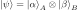
; otherwise entangled (Bell 1964). - Schmidt decomposition:
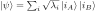
(SVD of the coefficient matrix). Entangled iff more than one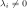
; entanglement entropy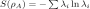
. - Singlet:
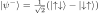
, rotationally invariant, .
.
Quantum correlation
Measuring
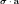
on A and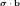
on B in the singlet: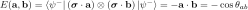
.CHSH inequality (proof)
Local realism: outcomes
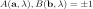
, with distributed by
distributed by 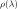
independent of the settings (Einstein et al. 1935; Clauser et al. 1969). For each,
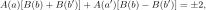
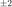
. Averaging: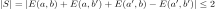
. Quantum: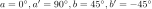
give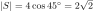
(Tsirelson's maximum) (Aspect et al. 1982).Worked example
Photon pairs from type-II SPDC in the state
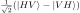
: polariser correlations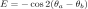
, so optimal angles are halved: 0°, 45°, 22.5°, −22.5°. Experiments measure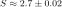
.No-cloning and no-signalling
No unitary
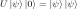
for all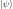
(linearity contradiction). Alice's choice of measurement does not change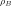
: entanglement cannot transmit information faster than light.Engineering applications
Entanglement-based QKD (E91, device-independent security certified by CHSH violation), quantum teleportation and repeaters, entangled-photon sources (SPDC in PPKTP or silicon waveguides), quantum sensing beyond the standard quantum limit.
Pitfall
Correlation is not signalling: each side alone sees random 50/50 outcomes; the correlation appears only when results are compared over a classical channel.